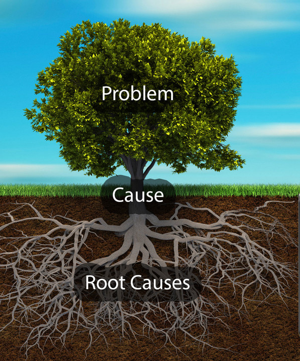
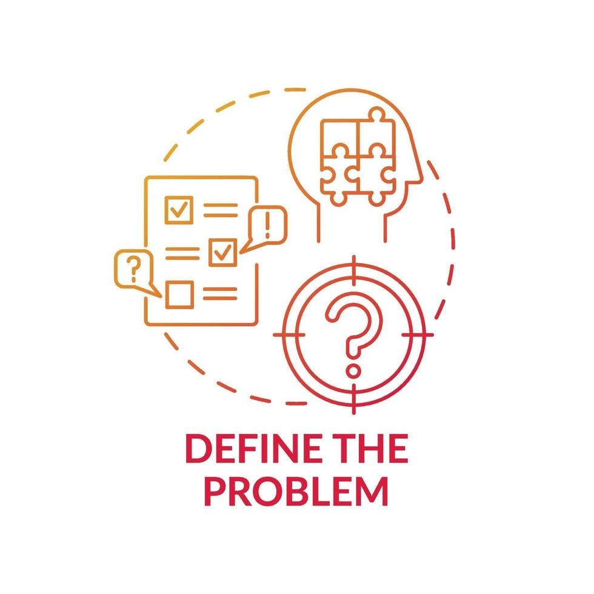
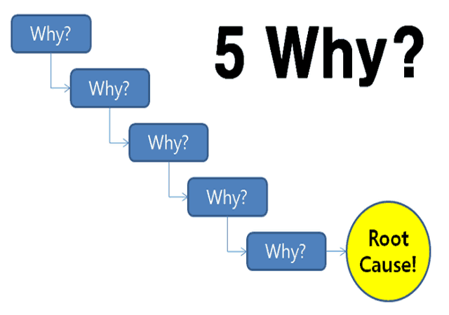
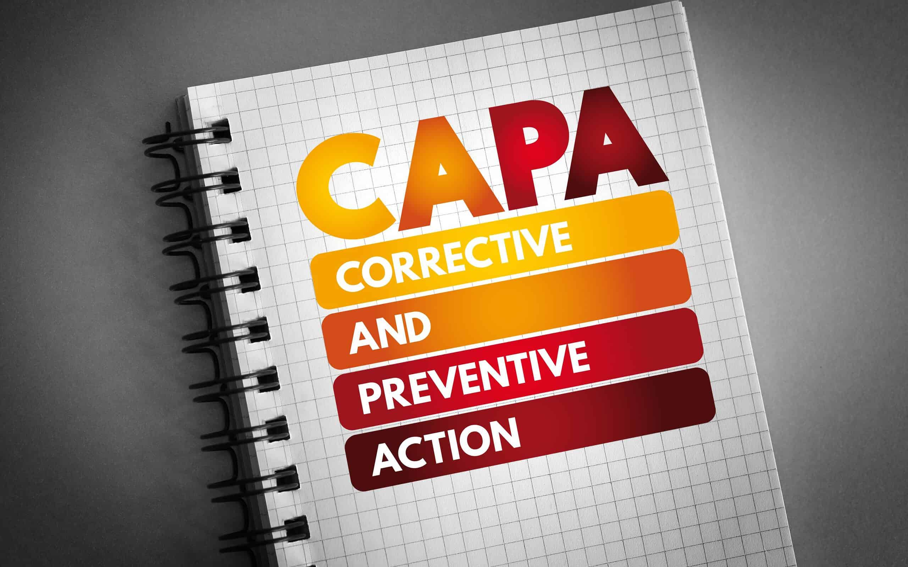

Example: Problem statement
The current process for onboarding new employees is inefficient, leading to delays and errors in paperwork completion.
A versatile problem-solving technique that can be used in a professional or personal setting.

A method that helps you understand the primary cause of a problem or why a problem occurred in the first place.
The current process for onboarding new employees is inefficient, leading to delays and errors in paperwork completion.

Define the problem, gather data and relevant evidence, and create a problem statement including its actual and potential impact.

Determine the factors that caused the problem. With the team, brainstorm the possible factors by asking “Why?” Use a 5 Whys diagram.
Continue asking why beyond the first layer of causal factors until you discover the fundamental cause.

Decide the corrective actions needed to eliminate the problem and prevent recurrence. Clearly communicate them to the people involved.
Review and evaluate the impact of the corrective actions. Make improvements as necessary.
Reorder the actions to match the steps. Drag them, or use the Up and Down arrow keys.